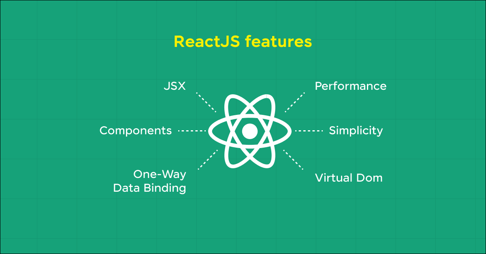

By Jaishree Tomar
Oct 30, 2025 | 6 Min Read | 85484 Views
(Last Updated)
As of 2025, React powers over 43% of professional developers worldwide, maintaining its lead as the most popular JavaScript library for building dynamic user interfaces. Its dominance stems from features such as efficient rendering, reusable components, and a vast ecosystem of tools that simplify development.
If you’re looking to learn React or strengthen your portfolio, building real-world projects is the most effective way to master it. In this blog, you’ll explore some of the best React project ideas — from beginner to advanced — complete with source code to help you apply concepts, sharpen skills, and stand out in the tech industry. Let’s begin!
React is a JavaScript-based UI library. It is widely used in web development. Its initial release was on May 29, 2013, and is now one of the most commonly used frontend libraries for web development. Its community-driven approach has led to a rich repository of resources, tools, and libraries that facilitate rapid application development.
For developers just starting with React, it’s recommended to become familiar with JSX, hooks, and the component lifecycle, which are foundational concepts within the framework.
